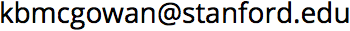

Linguist, phonetician, nerd.
Postdoctoral scholar in the Stanford University Department of Linguistics working with Meghan Sumner.
My area of research is phonetics with particular emphasis on listeners' use of informative patterns of variation.
-
Contact
- 
- twitter: @kbmcgowan
- Department of Linguistics
- Margaret Jacks Hall
- Building 460
- Stanford CA 94305-2150